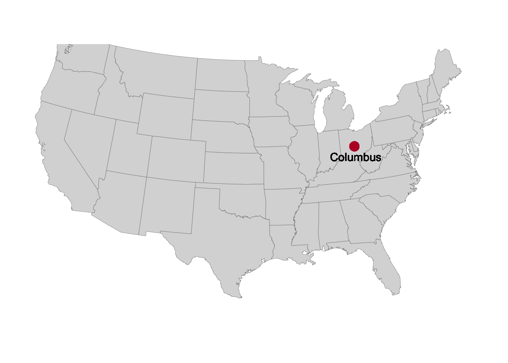
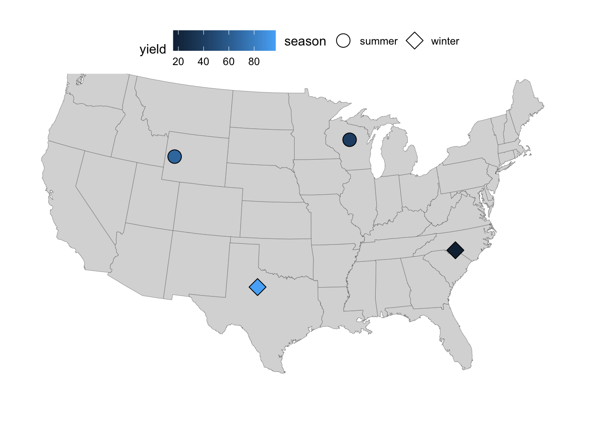
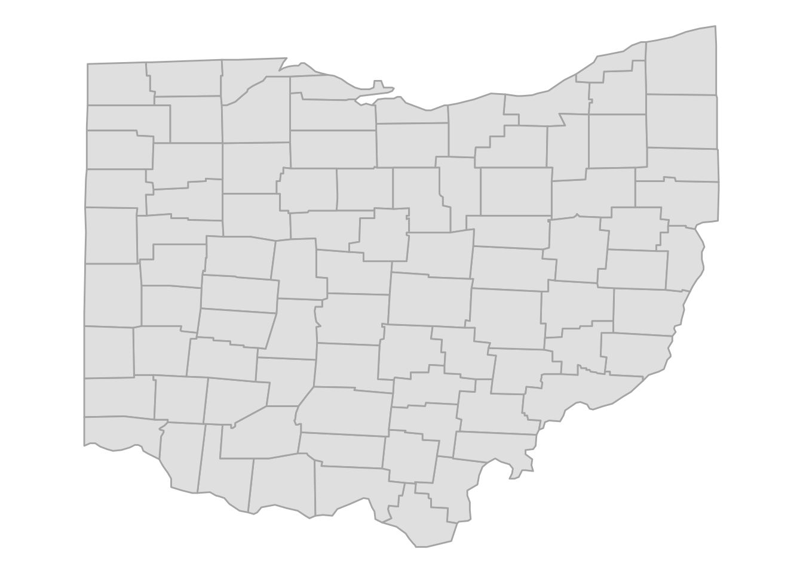
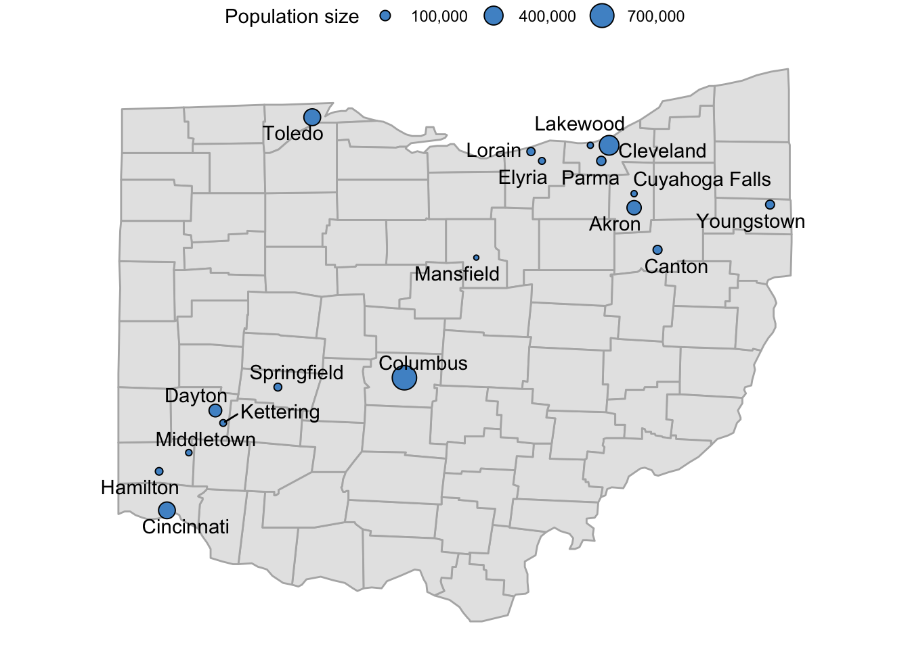

if (! require(maps)) install.packages("maps")
if (! require(sf)) install.packages("sf")Plotting geographical maps in R: part II
Adding markers and text to maps.
maps
ggplot2
dataviz
Today is the second of a series of Code Club sessions on making maps with R.
In the first session, we learned the basics of making and formatting maps with ggplot functions.
Today, we will learn how to add points/markers and text in various ways, and we will also see several data wrangling and general ggplot tricks while doing so.
1 Setting up
Installing and loading R packages
Last week, we realized during the session that two additional packages need to be installed for some of the ggplot map-related functions to work, so let’s make sure everyone has these installed:
The above type of code with the if statements is likely new to most of you. You can read this code as: if the package is not installed, then install it1.
Additionally, we’ll use a package with the quite specific purpose of avoiding overlap between text labels in ggplots:
if (! require(ggrepel)) install.packages("ggrepel")Finally, let’s load these packages, along with the tidyverse:
library(maps)
library(sf)Linking to GEOS 3.11.0, GDAL 3.5.3, PROJ 9.1.0; sf_use_s2() is TRUElibrary(tidyverse)── Attaching core tidyverse packages ──────────────────────── tidyverse 2.0.0 ──
✔ dplyr 1.1.4 ✔ readr 2.1.5
✔ forcats 1.0.0 ✔ stringr 1.5.1
✔ ggplot2 3.5.1 ✔ tibble 3.2.1
✔ lubridate 1.9.4 ✔ tidyr 1.3.1
✔ purrr 1.0.4 ── Conflicts ────────────────────────────────────────── tidyverse_conflicts() ──
✖ dplyr::filter() masks stats::filter()
✖ dplyr::lag() masks stats::lag()
✖ purrr::map() masks maps::map()
ℹ Use the conflicted package (<http://conflicted.r-lib.org/>) to force all conflicts to become errorslibrary(ggrepel)Picking up where we left off last week
Like last week,
- We’ll set a ggplot theme for all the following plots:
theme_set(theme_void())
theme_update(legend.position = "top")- We’ll load US state-wise map data:
states <- map_data(map = "state")
head(states) long lat group order region subregion
1 -87.46201 30.38968 1 1 alabama <NA>
2 -87.48493 30.37249 1 2 alabama <NA>
3 -87.52503 30.37249 1 3 alabama <NA>
4 -87.53076 30.33239 1 4 alabama <NA>
5 -87.57087 30.32665 1 5 alabama <NA>
6 -87.58806 30.32665 1 6 alabama <NA>- And create and store a base plot that we can build on:
p <- ggplot(states) +
geom_polygon(
aes(x = long, y = lat, group = group),
fill = "grey85",
color = "grey40",
linewidth = 0.1
) +
coord_sf(crs = 5070, default_crs = 4326)
p2 Adding markers and text to maps
Adding single text labels and points
We can add points to a map with the familiar geom geom_point(). We have previously used this geom to make scatterplots based on data in a data frame, but it can plot points at individually-specified locations, too.
As a first example, we’ll just add a single point to show where the city of Columbus is, setting its coordinates “on the fly” (outside of aes()) and using the OSU scarlet color via its Hex code as the point color:
p +
geom_point(x = -82.99, y = 39.99, colour = "#ba0c2f", size = 4)We can add arbitrary text labels in a similar way with the geom geom_text(), in which we specify the text that we want to print using the label argument (and note that I’m subtracting 1 from the latitude so the text ends up a bit below the point and not right on top of it):
p +
geom_point(x = -82.99, y = 39.99, colour = "#ba0c2f", size = 4) +
geom_text(x = -82.99, y = 39.99 - 1, label = "Columbus", size = 4)
Adding a set of points from a data frame
In your research, you may want to make a map that plots sampling locations. As a simple fictional example, we can create a dataframe with four sampling locations, a grouping factor (season), and a column with a numerical result for each location (yield):
locations <- data.frame(
location = c("L01", "L02", "L03", "L04"),
long = c(-80, -100, -90, -110),
lat = c(35, 33, 45, 43),
season = c("winter", "winter", "summer", "summer"),
yield = c(16, 97, 39, 66)
)
locations location long lat season yield
1 L01 -80 35 winter 16
2 L02 -100 33 winter 97
3 L03 -90 45 summer 39
4 L04 -110 43 summer 66Now, we can add a layer to our saved plot p with the sampling locations — note that:
- We are giving
geom_point()“its own” data set with thedata =argument - We map the
fillaesthetic to theseasoncolumn so we can distinguish samples from different seasons - We use point shape 21 (see this overview of R point shapes), which allows for a
fillcolor (separate from the outline color which can be set withcolor):
p +
geom_point(
data = locations,
aes(x = long, y = lat, fill = season),
size = 4,
shape = 21
)Exercise 1
Build on the previous map by making the appearance of the sampling location points reflect the values in the yield column. For example, higher yields could produce larger points, or the fill color of the points could depend on the yield.
Click here for some hints
To make points vary in size, use the
sizeaestheticaes(size = ...)To make points vary in fill color, use the
fillaesthetic and then switch to a different aesthetic forseason, like pointshape.
Click here for possible solutions with point size
- Make points vary in size according to the values in the
yieldcolumn by includingsize = yieldinsideaes():
p_size <- p +
geom_point(
data = locations,
aes(x = long, y = lat, fill = season, size = yield),
shape = 21
)
p_size- As an aside, the above legend had quite a small point size for the location with the lowest yield – to improve that, we can expand the
limitsof the scale, and optionally also play around with therangeof point sizes and thebreaks, i.e. the values that get displayed in the legend:
p_size +
scale_size_continuous(
limits = c(0, 100),
breaks = c(10, 50, 100),
range = c(1, 10)
)Click here for possible solutions with point fill color
- If we want to use
fillcolor instead foryield, we’ll need a different aesthetic forseason, e.g.shape:
p_fill <- p +
geom_point(
data = locations,
aes(x = long, y = lat, shape = season, fill = yield),
size = 5
) +
# Make sure the shapes support a fill color (the default ones don't):
scale_shape_manual(values = c(21, 23))
p_fill
- For a nicer-looking fill color scale, we can change to one of the viridis color scales:
p_fill +
scale_fill_viridis_c(option = "inferno")3 A county-level map of Ohio
The background map we’ve been working with so far doesn’t have county lines. But in some cases, like when making a map of single state such as Ohio, those would come in handy.
Getting county-level map data for just Ohio
We can get a county-level map of the entire United States using map_data(map = "county"):
map_data(map = "county") |>
head() long lat group order region subregion
1 -86.50517 32.34920 1 1 alabama autauga
2 -86.53382 32.35493 1 2 alabama autauga
3 -86.54527 32.36639 1 3 alabama autauga
4 -86.55673 32.37785 1 4 alabama autauga
5 -86.57966 32.38357 1 5 alabama autauga
6 -86.59111 32.37785 1 6 alabama autaugaWe will filter this dataframe so we are only left with data from Ohio:
ohio <- map_data(map = "county") |>
filter(region == "ohio")
head(ohio) long lat group order region subregion
1 -83.66902 39.02989 2012 59960 ohio adams
2 -83.56590 39.02989 2012 59961 ohio adams
3 -83.37109 39.06426 2012 59962 ohio adams
4 -83.30806 39.06426 2012 59963 ohio adams
5 -83.30233 39.05280 2012 59964 ohio adams
6 -83.25649 39.01842 2012 59965 ohio adamsLet’s get a feel for what’s in the resulting dataframe — the only region (i.e. state) should be ohio, and subregions represent counties:
ohio |> count(region) region n
1 ohio 1427ohio |> count(subregion) |> head() subregion n
1 adams 17
2 allen 16
3 ashland 17
4 ashtabula 11
5 athens 19
6 auglaize 16The number of entries for each county (n in the output above) is simply how many points make up the lines. Those numbers are quite low, making this a relatively low-resolution map — but good enough for our purposes.
A base map of Ohio
Now we are ready to plot our first map of Ohio:
p_ohio <- ggplot(ohio) +
geom_polygon(
aes(x = long, y = lat, group = group),
fill = "grey90",
color = "grey70"
) +
coord_sf()
p_ohio
We can use this as a base map to plot points on, like we did above with the US map. Or we could create a map where counties differ in fill color depending on some variable, like the number of farms or eagle nests in each county.
Adding county names
For now, without pulling in additional data, say that we want to print the county names in the map.
The county names are in all-lowercase, so let’s start by transforming to “Title Case” using the tools::toTitleCase() function:
ohio <- ohio |>
mutate(subregion = tools::toTitleCase(subregion))
head(ohio) long lat group order region subregion
1 -83.66902 39.02989 2012 59960 ohio Adams
2 -83.56590 39.02989 2012 59961 ohio Adams
3 -83.37109 39.06426 2012 59962 ohio Adams
4 -83.30806 39.06426 2012 59963 ohio Adams
5 -83.30233 39.05280 2012 59964 ohio Adams
6 -83.25649 39.01842 2012 59965 ohio AdamsBut if we now add text labels with geom_text() using the subregion colum, we’ll get the following terrible map:
p_ohio +
geom_text(
aes(x = long, y = lat, label = subregion),
color = "darkblue",
size = 3
)Why is this happening?
The reason is that each county has a number of rows in the dataframe: one for each point that makes up its border. And right now, we’re printing the county label for every single point.So, we’ll need a single pair of coordinates for each county to print each county name once, and those should be in the center of each county. Therefore, we’ll need to compute some kind of approximation of the county centers.
Taking the mean of the border-coordinates for each county could be a start, but looking at the positions of the text labels in the map above, can you think of a reason why that may not be optimal?
Click for the answer
There are more points in irregularly-shaped (i.e., not straight lines) parts of the border. In practice, those tend be on specific sides of the border (e.g., look at the western border of Ohio and the counties there), so the mean values will be drawn towards those sides. Using the median wouldn’t help.A better –though still not perfect– way to compute this is by subtracting, for both latitude and longitude, half of the range (max. - min.) from the maximum value:
county_coords <- ohio |>
summarize(
long = max(long) - ((max(long) - min(long)) / 2),
lat = max(lat) - ((max(lat) - min(lat)) / 2),
.by = subregion
)
head(county_coords) subregion long lat
1 Adams -83.47995 38.84367
2 Allen -84.14172 40.78887
3 Ashland -82.28247 40.82324
4 Ashtabula -80.76986 41.73425
5 Athens -82.00745 39.37939
6 Auglaize -84.17036 40.52244Now, we can add the county labels to the plot:
p_ohio +
geom_text(
data = county_coords,
aes(x = long, y = lat, label = subregion),
color = "darkblue",
size = 3
)Exercise 2
A) OSU has campuses in the following places:
- Columbus, Franklin County
- Wooster, Wayne County
- Lima, Allen County
- Mansfield, Richland County
- Marion, Marion County
- Newark, Licking County
Can you create a map similar to our previous one, but then with only these 6 counties labeled by name? Like in the example below:
Click here for some hints
You’ll have to
filter()thecounty_coordsdata frame to only keep the counties of interest.After that, the plotting code will be identical to that for the previous map, just make sure you pass the correct, filtered data frame.
Click here for the solution
- First we filter the
county_coordsto only keep our focal counties, and store the result in a new data frame:
focal_counties <- c("Franklin", "Wayne", "Allen",
"Richland", "Marion", "Licking")
county_coords_sel <- county_coords |>
filter(subregion %in% focal_counties)- We use the same plotting code as before, but now with
county_coords_sel:
p_ohio +
geom_text(
data = county_coords_sel,
aes(x = long, y = lat, label = subregion),
color = "darkblue",
size = 4
)
B) (Bonus) Can you produce a map that has a different fill color for each county, like the one below?

Click here for some hints
You’ll want to keep the original
geom_polygon()layer with the gray counties (i.e., you can start with thep_ohiomap), and then add a secondgeom_polygon()layer that only has the selected counties.In that second layer, map the
countycolumn to thefillaesthetic.Make sure to add the
geom_text()layer last, or it would be masked by the polygon layer.If you’re printing the names of the counties, then you won’t need a legend: you can turn that off using
theme(legend.position = "none").
Click here for the solution
p_ohio +
geom_polygon(
data = ohio |> filter(subregion %in% focal_counties),
aes(x = long, y = lat, group = group, fill = subregion),
color = "grey70"
) +
geom_text(
data = county_coords_sel,
aes(x = long, y = lat, label = subregion),
color = "darkblue",
size = 4
) +
theme(legend.position = "none")4 Plotting Ohio cities
Finally, we’ll add all larger Ohio cities to our Ohio map. From the maps package, we can use the us.cities dataframe which contains US cities with populations greater than about 40,000:
# 'us.cities' should be available if you have loaded the maps package
head(us.cities) name country.etc pop lat long capital
1 Abilene TX TX 113888 32.45 -99.74 0
2 Akron OH OH 206634 41.08 -81.52 0
3 Alameda CA CA 70069 37.77 -122.26 0
4 Albany GA GA 75510 31.58 -84.18 0
5 Albany NY NY 93576 42.67 -73.80 2
6 Albany OR OR 45535 44.62 -123.09 0Let’s pre-process this data a bit by:
- Only taking Ohio cities with populations over 50,000
- Stripping the state-abbreviation suffix that all cities have, as we saw above. Since we are left with only Ohio cities, we can therefore simply remove
OHfrom thename:
oh_cities <- us.cities |>
filter(country.etc == "OH", pop > 50000) |>
# We'll use the sub() function to substitute " OH" with nothing (""):
mutate(name = sub(pattern = " OH", replacement = "", x = name))
head(oh_cities) name country.etc pop lat long capital
1 Akron OH 206634 41.08 -81.52 0
2 Canton OH 77575 40.81 -81.37 0
3 Cincinnati OH 301561 39.14 -84.51 0
4 Cleveland OH 443949 41.48 -81.68 0
5 Columbus OH 741677 39.99 -82.99 2
6 Cuyahoga Falls OH 52223 41.17 -81.52 0Adding city points
Now, let’s add these cities to our Ohio base map (p_ohio), with larger points for larger cities:
p_ohio_cities <- p_ohio +
geom_point(
data = oh_cities,
aes(x = long, y = lat, size = pop),
fill = "steelblue3",
shape = 21
)
p_ohio_citiesAdding city names
Next, let’s add the names of the cities with geom_text():
p_ohio_cities +
geom_text(
data = oh_cities,
aes(x = long, y = lat + 0.1, label = name)
)Ouch, there are a lot of overlapping labels there! We can avoid this with a drop-in replacement for geom_text() named geom_text_repel() from the ggrepel package:
p_ohio_cities_labeled <- p_ohio_cities +
geom_text_repel(
data = oh_cities,
aes(x = long, y = lat, label = name)
)
p_ohio_cities_labeledSide note: A better legend
We may want to change the size legend a bit:
- Its title is
pop, which we can change to e.g.Population size. - The scientific notation of the population sizes is cumbersome to read, and we can change it to a notation with a comma as a thousands-separator (
13,000, etc.) usinglabels = scales:comma. - The range of the legend entries (breaks) is quite a bit more restricted than the sizes of our cites (200-600k versus 50-740k), so we may want to get a better range by manually defining breaks.
p_ohio_cities_labeled +
scale_size_continuous(
name = "Population size",
labels = scales::comma,
breaks = c(100, 400, 700) * 1000
)
Want to further expand the range of the legend’s scale breaks? (Click to expand)
ggplot will refuse to include breaks in the legend that are outside of the scale’s limits, which are by default the range of the data. Because the smallest city in the dataset is just larger than 50,000, and the largest city is just smaller than 750,000 (see below), setting breaks to these values will therefore not work unless we expand the scale’s limits with the limits argument.
Check what the range of population sizes is (min. and max.):
range(oh_cities$pop)[1] 50010 741677Or if we wanted to see which cities these are:
oh_cities |> arrange(pop) |> head(n = 1) name country.etc pop lat long capital
1 Mansfield OH 50010 40.76 -82.53 0oh_cities |> arrange(desc(pop)) |> head(n = 1) name country.etc pop lat long capital
1 Columbus OH 741677 39.99 -82.99 2Breaks at 50 and 750 will be ignored by default (!), because they are outside of the scale’s limits:
p_ohio_cities_labeled +
scale_size_continuous(
name = "Population size",
labels = scales::comma,
breaks = c(50, 100, 250, 500, 750) * 1000
)If we also expand the limits of the scale, we can include breaks at 50 and 750:
p_ohio_cities_labeled +
scale_size_continuous(
name = "Population size",
labels = scales::comma,
limits = c(50, 750) * 1000,
breaks = c(50, 100, 250, 500, 750) * 1000
)Bonus exercise
Can you produce a map in which the names of cities with a population larger than 100,000 are in a bold italic (bold.italic) fontface, whereas those of smaller cities are in regular (plain) fontface?
See the example below:
Click here for some hints
Using
mutate()with anifelse()statement, you’ll first want to create a column that specifies whether or not a city has a population larger than 100,000.Next, you can map that newly created column to the
fontfaceaesthetic (aes(fontface = ...)).The
fontfaceaesthetic is a bit unusual, so using it like you would say thesizeorcoloraesthetic doesn’t quite work. Take a look at the example in the ggplot docs and see if you can figure out how to use it.
Click here for the solution
- First, we create a new column
is_largethat indicates whether a city has more than 100,000 inhabitants. Instead of coding this column withTRUE/FALSE(see below), we’ll need to directly use the specific fontfaces we want to display for each type of city:
oh_cities <- oh_cities |>
mutate(is_large = ifelse(pop > 100000, "bold.italic", "plain"))- Next, we can map the
fontfaceaesthetic to theis_largecolumn:
p_ohio_cities +
geom_text_repel(
data = oh_cities,
aes(x = long, y = lat, label = name, fontface = is_large)
)- If we were using any other aesthetic (e.g.
fill), we would probably useTRUE/FALSEin the focal column instead, and that would work — but it returns an error here:
oh_cities <- oh_cities |>
mutate(is_large = ifelse(pop > 100000, TRUE, FALSE))
p_ohio_cities +
geom_text_repel(
data = oh_cities,
aes(x = long, y = lat, label = name, fontface = is_large)
)Error in FUN(X[[i]], ...): invalid fontface TRUEAlong the same lines, there are no scale_fontface functions to set the fontfaces: this instead has to be done with the values in the column.
Footnotes
Specifically,
! require(...)will returnTRUEif the package cannot be loaded because it is not installed — and due to theif()statement, theinstall.packages("maps")will be executed only if it returnsTRUE.↩︎